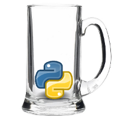

Ve čtvrtek 27. 9. proběhlo po delší odmlce setkání vývojářů v Pythonu, PyVo. Pořadovým číslem už deváté.
Devět setkání nad pivem a s přednáškami, to už se dá považovat za nějakou tradici. No a když už je v nějakém setkávání tradice, začne se od něj něco očekávat. Lidé očekávají nějakou kvalitu přednášek, očekávají nějaký servis (jídlo, pití, wifi, klidný salonek), očekávají, že vše proběhne tak jak má. Už se nepromíjí chybky, kterým se dříve desítka Pythonistů nad pivem spíš jen ...